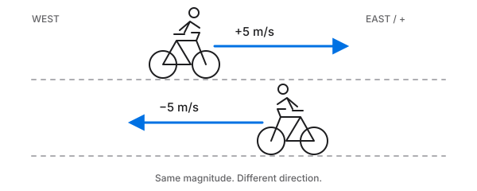
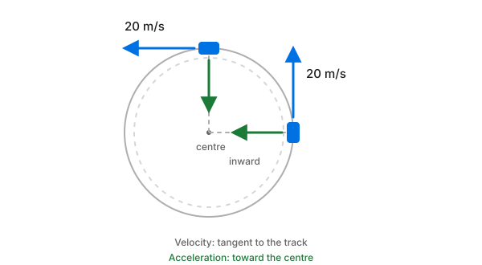

YOU · REQUESTTeach me mechanics from my Physics notes — start with velocity and acceleration.
# Kinematics
Learning Session
Session plan 3 topics
- Distinguish speed from velocity
- Recognize a change in velocity
- Connect that change to acceleration
SOURCE · YOUR NOTES
## Velocity
Velocity describes a change in position over time. Unlike speed, it includes direction.
Let’s separate two ideas that sound similar. Speed tells you how fast. Velocity tells you how fast and in which direction.
### Same speed. Same velocity?
Two cyclists travel at 5 m/s in opposite directions. Do they have the same velocity? Talk through your reasoning.

YOU · FIRST ATTEMPTI think so? They’re both moving at 5 m/s, so the numbers match.
The number is only half the description.
You compared their speeds correctly. The missing piece is direction: choosing east as positive gives one cyclist +5 m/s and the other −5 m/s. Equal speed, different velocity.
Let’s check that distinction with a smaller question.
### What changes when you turn around?
A cyclist turns around but keeps the same speed. Has their velocity changed? Why?
YOU · SECOND ATTEMPTYes—the direction has changed even though the speed hasn’t. Velocity includes direction, so it must be different.
Now you’re tracking direction, too.
Your first answer used the magnitude alone. This time, you checked both parts. When comparing velocities, ask: same magnitude, and same direction?
SOURCE · YOUR NOTES
## Acceleration
Acceleration is the change in velocity over time.
This builds on what you just worked out. If velocity changes when direction changes, an object can accelerate without speeding up.
### A steady speed around a bend
A car goes around a circular track at a steady 20 m/s. Is it accelerating? Explain using what changed—and what didn’t.
